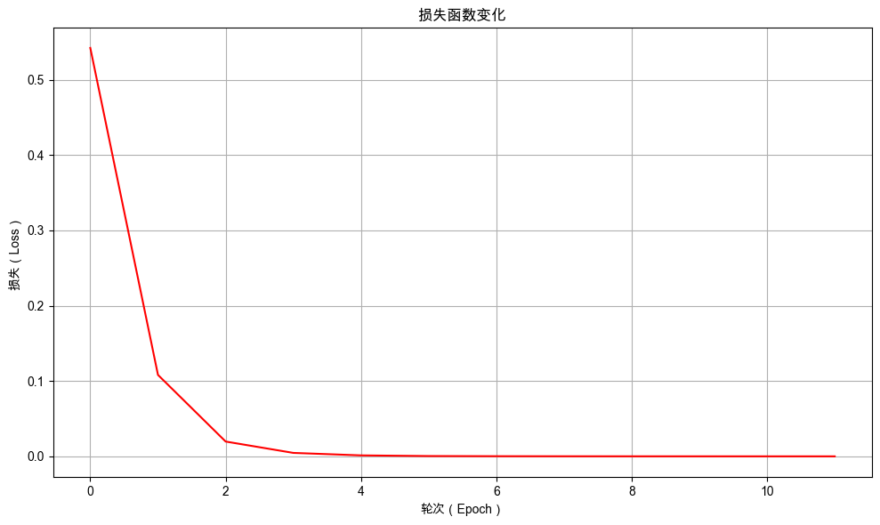

6. 表示的困境：OneHot编码与模型局限#
通过本次任务，你将学会如何使用 OneHot 表示文本，提高情感分析模型的能力。
6.1. 任务背景#
无人奶茶店业务仍在持续扩张，你每天收到的顾客评价数量呈指数级增长。在上一章的实践中，你成功构建了一个基于字符 ID 序列的情感分类流程，迈出了自然语言处理的第一步。然而，这个模型在历史数据上表现尚可，但在面对未曾见过的评价时，其判断力急剧下降，陷入了严重的过拟合。
经过深入分析，你发现问题根源在于文本的表示方式。采用“字符 ID 索引”的表示方法，会存在很大的数，这种大数对模型来说非常不稳定，当它位置稍有变化就会引起模型的大幅震荡。
那么如何解决这个问题呢？
6.2. 最少必要知识#
OneHot 编码
6.3. 任务鸟瞰#
6.3.1. 任务分析#
本次任务是通过改进语言的表示形式，解决使用 Token ID 带来的大数问题，提高模型性能。

自然语言处理表示文本最经典的方法：One-Hot 编码。与字符索引的任意整数不同，OneHot 向量将每个字符表示为一个稀疏的二值向量，其维度等于整个字符集的大小。
假设词表为 {'动': 0, '手': 1, '学': 2, '大': 3, '模': 4, '型': 5}，OneHot 编码会将每个字符表示为一个长度为6（词表大小）的二值向量。在该向量中，仅在与字符索引对应的位置上为1，其余位置均为0，所以才将这种方法称之为独热编码。
具体编码结果如下表所示：
字符 |
索引 |
One-Hot编码向量 |
|---|---|---|
动 |
0 |
|
手 |
1 |
|
学 |
2 |
|
大 |
3 |
|
模 |
4 |
|
型 |
5 |
|
OneHot 编码完美的解决了上一章存在的大数问题，下面我们使用 OneHot 编码来提高模型性能。
6.3.2. 模型结构#
本次的改进只是将文本表示方式由字符索引变为 OneHot 编码，模型的结构不变。

依然沿用 NLP 任务的通用开发流程组织本章内容：定义分词器、数据准备、模型定义、模型训练与模型评估。在正式开始之前，先打印环境的版本号，避免因为环境不同而导致程序不能复现。
6.3.3. 环境版本#
from util import show_version
show_version()
本书愿景：
+------+--------------------------------------------------------+
| Info | 《动手学人工智能》 |
+------+--------------------------------------------------------+
| 作者 | 吾辈亦有感 |
| 哔站 | https://space.bilibili.com/3546632320715420 |
| 定位 | 基于'从零构建'的理念，用实战帮助程序员快速入门大模型。 |
| 愿景 | 若让你的AI学习之路走的更容易一点，我将倍感荣幸！祝好😄 |
+------+--------------------------------------------------------+
环境信息：
+-------------+--------------+------------------------+
| Python 版本 | PyTorch 版本 | PyTorch Lightning 版本 |
+-------------+--------------+------------------------+
| 3.12.12 | 2.9.1 | 2.6.0 |
+-------------+--------------+------------------------+
6.4. 自定义分词器#
数据的格式和分词器代码与第 5 章内容一致，此处不再重复说明。
6.4.1. 自定义分词器的代码实现#
class SimpleTokenizer:
def __init__(self):
"""
初始化简单分词器
"""
# 特殊token
self.pad_token = '[PAD]'
self.unk_token = '[UNK]'
# 特殊token ID
self.pad_token_id = 0
self.unk_token_id = 1
# 构建词汇表
self.vocab = {
self.pad_token: self.pad_token_id,
self.unk_token: self.unk_token_id,
}
# 反向词汇表 (id -> token)
self.ids_to_tokens = {v: k for k, v in self.vocab.items()}
# 词汇表大小
self.vocab_size = len(self.ids_to_tokens)
def build_vocab(self, texts):
"""
根据文本构建词汇表
"""
for text in texts:
words = list(text) # 将每个汉字作为独立token
for word in words:
if word not in self.vocab:
self.vocab[word] = self.vocab_size
self.ids_to_tokens[self.vocab_size] = word
self.vocab_size += 1
def build_vocab_from_file(self, file_path):
"""
从文件中构建词汇表
"""
texts = []
with open(file_path, 'r', encoding='utf-8') as f:
for line in f:
texts.append(line.strip())
self.build_vocab(texts)
def encode(self, text):
"""
将文本编码为token ids
"""
tokens = list(text)
# 转换为IDs
token_ids = []
for token in tokens:
if token in self.vocab:
token_ids.append(self.vocab[token])
else:
token_ids.append(self.unk_token_id)
return token_ids
def decode(self, token_ids, skip_special_tokens=True):
"""
将token ids解码为文本
"""
tokens = []
for token_id in token_ids:
if token_id in self.ids_to_tokens:
token = self.ids_to_tokens[token_id]
# 过滤特殊token
if skip_special_tokens:
if token not in [self.pad_token, self.unk_token]:
tokens.append(token)
else:
tokens.append(token)
return ''.join(tokens)
def pad_sequences(self, sequences, max_length):
"""
对序列进行填充或截断
"""
padded_sequences = []
for seq in sequences:
if len(seq) > max_length:
# 截断
padded_seq = seq[:max_length]
else:
# 填充
pad_length = max_length - len(seq)
padded_seq = seq + [self.pad_token_id] * pad_length
padded_sequences.append(padded_seq)
return padded_sequences
def __call__(self, texts, max_length=128):
"""
分词器主调用函数
"""
is_single_text = False
if isinstance(texts, str):
is_single_text = True
texts = [texts]
# 编码所有文本
all_token_ids = []
for text in texts:
token_ids = self.encode(text)
all_token_ids.append(token_ids)
# 填充或截断到统一长度
padded_token_ids = self.pad_sequences(all_token_ids, max_length)
if is_single_text:
padded_token_ids = padded_token_ids[0]
return padded_token_ids
6.4.2. 创建自定义分词器的实例#
# 使用 print_table 展示结果
from util import print_table
# 示例文本
sample_texts = [
"动手学大模型",
"吾辈亦有感"
]
# 创建分词器实例
tokenizer = SimpleTokenizer()
# 构建词汇表
tokenizer.build_vocab(sample_texts)
# 构建词汇表信息表格
vocab_info = [["Vocabulary Size", tokenizer.vocab_size]]
print_table("分词器信息", ["项目", "值"], vocab_info)
# 显示词表
print_table("字符到ID的映射表", field_names=["Token", "Token ID"], data=[
[token, tokenizer.vocab[token]] for token in tokenizer.vocab])
分词器信息：
+-----------------+----+
| 项目 | 值 |
+-----------------+----+
| Vocabulary Size | 13 |
+-----------------+----+
字符到ID的映射表：
+-------+----------+
| Token | Token ID |
+-------+----------+
| [PAD] | 0 |
| [UNK] | 1 |
| 动 | 2 |
| 手 | 3 |
| 学 | 4 |
| 大 | 5 |
| 模 | 6 |
| 型 | 7 |
| 吾 | 8 |
| 辈 | 9 |
| 亦 | 10 |
| 有 | 11 |
| 感 | 12 |
+-------+----------+
6.5. 准备数据#
6.5.1. 自定义数据转化器#
自定义一个数据预处理转换器 TextTransform 类，使用分词器将给定的文本字符串转换为 Token ID 序列后，再将其转化为 One-Hot 编码张量。

6.5.1.1. 数据转化器的代码实现#
import torch
import torch.nn.functional as F
class TextTransform:
def __init__(self, tokenizer, max_length=30, vocab_size=None):
self.tokenizer = tokenizer
self.max_length = max_length
# 需要知道词汇表大小来创建 one-hot 向量
self.vocab_size = vocab_size or tokenizer.vocab_size
def __call__(self, text):
# 使用 tokenizer 对文本进行编码，并自动完成截断与填充
input_ids = self.tokenizer(
text,
max_length=self.max_length, # 最大序列长度
)
# 将 input_ids 转换为 one-hot 向量
# 注意：这里假设 input_ids 是一个列表或者一维张量
# 如果 input_ids 不是 tensor，则转换为 tensor
if not isinstance(input_ids, torch.Tensor):
input_ids = torch.tensor(input_ids, dtype=torch.long)
# 🌟改进点：转换为 one-hot 向量
one_hot = F.one_hot(input_ids, num_classes=self.vocab_size).float()
return one_hot
在使用 Tokenizer 将文本编码成 ID 序列后，使用 PyTorch 的 one_hot() 将得到的整数 ID 序列转换为一个稀疏的二值向量序列。每个 ID 被扩展为一个长度等于 vocab_size 的向量，其中仅在对应 ID 索引的位置上值为 1，其余位置为 0。最后，将数据类型转换为 float 以适配神经网络的输入要求。
6.5.1.2. 数据转化器的使用示例#
# 设置最大序列长度
max_length = 10
# 示例文本
sample_text = "动手学大语言模型"
# 创建 TextTransform 实例，用于将文本转换为 One-Hot 编码
text_transform = TextTransform(tokenizer, max_length=max_length)
# 使用 tokenizer 对示例文本进行编码，得到 Token ID 序列
input_ids = tokenizer(sample_text, max_length=max_length)
# 使用 text_transform 将示例文本转换为 One-Hot 编码张量
encoded_token_ids = text_transform(sample_text)
# 打印词表大小
print("词表大小：", tokenizer.vocab_size)
# 打印 tokenizer 编码后的 Token ID 序列
print("Tokenizer Encode Input IDs:", input_ids)
# 打印 tokenizer 解码后的文本（包含特殊 Token）
print("Tokenizer Decode Input:", tokenizer.decode(input_ids, skip_special_tokens=False))
# 打印应用 One-Hot 编码后张量的形状
print("OneHot Encoded Shape:", encoded_token_ids.shape)
# 打印应用 One-Hot 编码后张量的具体内容
print("OneHot Encoded:", encoded_token_ids)
词表大小： 13
Tokenizer Encode Input IDs: [2, 3, 4, 5, 1, 1, 6, 7, 0, 0]
Tokenizer Decode Input: 动手学大[UNK][UNK]模型[PAD][PAD]
OneHot Encoded Shape: torch.Size([10, 13])
OneHot Encoded: tensor([[0., 0., 1., 0., 0., 0., 0., 0., 0., 0., 0., 0., 0.],
[0., 0., 0., 1., 0., 0., 0., 0., 0., 0., 0., 0., 0.],
[0., 0., 0., 0., 1., 0., 0., 0., 0., 0., 0., 0., 0.],
[0., 0., 0., 0., 0., 1., 0., 0., 0., 0., 0., 0., 0.],
[0., 1., 0., 0., 0., 0., 0., 0., 0., 0., 0., 0., 0.],
[0., 1., 0., 0., 0., 0., 0., 0., 0., 0., 0., 0., 0.],
[0., 0., 0., 0., 0., 0., 1., 0., 0., 0., 0., 0., 0.],
[0., 0., 0., 0., 0., 0., 0., 1., 0., 0., 0., 0., 0.],
[1., 0., 0., 0., 0., 0., 0., 0., 0., 0., 0., 0., 0.],
[1., 0., 0., 0., 0., 0., 0., 0., 0., 0., 0., 0., 0.]])
从结果中可以看到，示例文本编码后的数据形状为 [10, 13]。
第一个维度
10：代表处理后的序列长度。这是在初始化TextTransform时设定的max_length参数。无论输入文本多长，TextTransform都会通过分词器的pad_sequences方法将其统一处理（截断或填充）为长度为 10 的序列。第二个维度
13：代表词汇表的大小 (vocab_size)。这是根据分词器tokenizer构建的词表长度自动确定的。TextTransform内部使用F.one_hot函数，将每个字符的 ID 索引转换为一个长度为vocab_size的 OneHot 向量。
6.5.2. 自定义文本分类数据集#
6.5.2.1. 文本分类数据集的代码实现#
这部分代码与第5章内容一致，此处不再重复说明
import torch
from torch.utils.data import Dataset
class TextClassificationDataset(Dataset):
def __init__(self, texts, labels, transform):
self.texts = texts
self.labels = labels
self.transform = transform
def __len__(self):
return len(self.texts)
def __getitem__(self, idx):
text = self.texts[idx]
label = self.labels[idx]
input_ids = self.transform(text)
return {
"input_ids": input_ids,
"labels": torch.tensor(label, dtype=torch.long)
}
@classmethod
def from_file(cls, file_path, transform):
"""
从txt文件加载数据集
txt格式应包含标签和文本，使用制表符分隔
"""
texts = []
labels = []
# 读取txt文件
with open(file_path, 'r', encoding='utf-8') as f:
for line in f:
line = line.strip()
if line:
# 使用制表符分割
parts = line.split('\t')
if len(parts) >= 2:
label = int(parts[0]) # 第一列是标签
text = '\t'.join(parts[1:]) # 剩余部分是文本（处理文本中可能包含制表符的情况）
texts.append(text)
labels.append(label)
# 创建数据集实例
return cls(texts, labels, transform)
6.5.2.2. 文本分类数据集的使用示例#
创建文本分类数据集流程：
SimpleTokenizer()创建字符级分词器build_vocab_from_file()从训练文件读取所有文本，构建包含所有出现字符的词汇表TextTransform()创建转换器，将文本转换为固定长度的 One-Hot 编码TextClassificationDataset.from_file()从文件加载带标签的数据集
# 导入 pprint 模块，用于美化打印数据结构
from pprint import pprint
# 定义数据文件路径
file_path = "./dataset/comments_train.txt"
# 1. 创建分词器实例
tokenizer = SimpleTokenizer()
# 2. 从文件中构建词汇表
tokenizer.build_vocab_from_file(file_path)
# 3. 创建数据转换器实例，设置最大序列长度为 10
transform = TextTransform(tokenizer, max_length=10)
# 4.从文件加载数据集，并应用转换器进行预处理
dataset = TextClassificationDataset.from_file(file_path, transform=transform)
# 打印前两个样本的 input_ids 形状
print("词表大小:", tokenizer.vocab_size)
print("input_ids shape:", dataset[:2]['input_ids'].shape)
pprint(dataset[:2])
词表大小: 1725
input_ids shape: torch.Size([2, 10, 1725])
{'input_ids': tensor([[[0., 0., 0., ..., 0., 0., 0.],
[0., 0., 0., ..., 0., 0., 0.],
[0., 0., 0., ..., 0., 0., 0.],
...,
[0., 0., 0., ..., 0., 0., 0.],
[0., 0., 0., ..., 0., 0., 0.],
[0., 0., 0., ..., 0., 0., 0.]],
[[0., 0., 0., ..., 0., 0., 0.],
[0., 0., 0., ..., 0., 0., 0.],
[0., 0., 0., ..., 0., 0., 0.],
...,
[0., 0., 0., ..., 0., 0., 0.],
[0., 0., 0., ..., 0., 0., 0.],
[0., 0., 0., ..., 0., 0., 0.]]]),
'labels': tensor([1, 0])}
从结果中我们可以看到数据集中的数据符合我们的预期，input_ids 是一个 3 维张量，形状为[2, 10, 1725]，也可以写成 [batch_size, max_length, vocab_size]。这个三维张量的每个维度都有明确的含义：
第一个维度
2：代表批量大小（batch_size）。使用dataset[:2]切片的方式从数据集中只取了前两个样本。第二个维度
10：代表序列长度（max_length）。在初始化TextTransform时通过参数max_length=10设定的。无论原始文本多长，TextTransform都会调用分词器的pad_sequences方法，将所有文本统一处理（截断或填充）为长度为 10 的序列。第三个维度
1725：代表词汇表大小（vocab_size）。这是由SimpleTokenizer从./dataset/comments_train.txt文件中构建的词汇表决定的。TextTransform内部使用F.one_hot函数，将每个字符的 ID 索引转换为一个长度为vocab_size的 One-Hot 向量。词汇表大小为 1725 ，那么每个字符就被表示为一个长度为 1725 的向量，其中只有对应索引的位置是 1，其余位置都是 0。
6.5.3. 自定义文本分类数据模组#
6.5.3.1. 文本分类数据模组的代码实现#
此部分代码和第5章一致，不再进行赘述。
import lightning as L
from torch.utils.data import DataLoader
class TextDataModule(L.LightningDataModule):
def __init__(self, batch_size, transform, train_data_file, val_data_file="", test_data_file=""):
super().__init__()
# 训练、验证和测试数据文件路径
self.train_data_file = train_data_file # 训练数据文件路径
self.val_data_file = val_data_file # 验证数据文件路径（可选）
self.test_data_file = test_data_file # 测试数据文件路径（可选）
# 数据集实例，初始为None，在setup方法中初始化
self.test_dataset = None # 测试数据集
self.val_dataset = None # 验证数据集
self.train_dataset = None # 训练数据集
# 批次大小和数据转换器
self.batch_size = batch_size # 每个批次的样本数量
self.transform = transform # 数据转换器，用于预处理数据
def prepare_data(self):
# 下载或准备数据集的操作（如果需要）
# 此方法通常用于下载数据或进行一次性操作
pass
def setup(self, stage=None):
# 根据阶段加载数据集
# 加载训练数据集
self.train_dataset = TextClassificationDataset.from_file(
self.train_data_file,
transform=self.transform
)
# 如果未提供验证数据文件，则使用训练数据集作为验证集
if self.val_data_file == "":
self.val_dataset = self.train_dataset
else:
# 否则加载指定的验证数据集
self.val_dataset = TextClassificationDataset.from_file(
self.val_data_file,
transform=self.transform
)
# 如果未提供测试数据文件，则使用验证数据集作为测试集
if self.test_data_file == "":
self.test_dataset = self.val_dataset
else:
# 否则加载指定的测试数据集
self.test_dataset = TextClassificationDataset.from_file(
self.test_data_file,
transform=self.transform
)
def train_dataloader(self):
# 返回训练数据的DataLoader，启用shuffle以打乱数据顺序
return DataLoader(self.train_dataset, batch_size=self.batch_size, shuffle=True)
def val_dataloader(self):
# 返回验证数据的DataLoader，不打乱数据顺序
return DataLoader(self.val_dataset, batch_size=self.batch_size)
def test_dataloader(self):
# 返回测试数据的DataLoader，不打乱数据顺序
return DataLoader(self.test_dataset, batch_size=self.batch_size)
6.5.3.2. 文本分类数据模组的使用示例#
# 创建 DataModule 实例
max_length = 30
tokenizer = SimpleTokenizer()
tokenizer.build_vocab_from_file("./dataset/comments_train.txt")
transform = TextTransform(tokenizer, max_length=max_length)
text_datamodule = TextDataModule(batch_size=2, transform=transform, train_data_file="./dataset/comments_train.txt")
# 调用 setup 方法初始化数据集
text_datamodule.setup()
# 获取训练数据加载器
train_loader = text_datamodule.train_dataloader()
# 打印一个批次的数据
print("打印一个批次的数据：")
for batch in train_loader:
pprint(batch, sort_dicts=False)
print("-" * 20)
print("input_ids shape: ", batch["input_ids"].shape)
print("labels shape: ", batch["labels"].shape)
break
打印一个批次的数据：
{'input_ids': tensor([[[0., 0., 0., ..., 0., 0., 0.],
[0., 0., 0., ..., 0., 0., 0.],
[0., 0., 0., ..., 0., 0., 0.],
...,
[1., 0., 0., ..., 0., 0., 0.],
[1., 0., 0., ..., 0., 0., 0.],
[1., 0., 0., ..., 0., 0., 0.]],
[[0., 0., 0., ..., 0., 0., 0.],
[0., 0., 0., ..., 0., 0., 0.],
[0., 0., 0., ..., 0., 0., 0.],
...,
[1., 0., 0., ..., 0., 0., 0.],
[1., 0., 0., ..., 0., 0., 0.],
[1., 0., 0., ..., 0., 0., 0.]]]),
'labels': tensor([0, 0])}
--------------------
input_ids shape: torch.Size([2, 30, 1725])
labels shape: torch.Size([2])
这部分代码和第5章相同，但其中每个批次的数据却大相径庭，每个批次的数据形状从 2 维升级到了 3 维。 具体区别如下：
特性 |
使用 Token ID 表示字符 |
使用 OneHot 向量表示字符 |
|---|---|---|
表示本质 |
整数索引 |
稀疏二值向量 |
单个字符表示 |
一个标量 |
一个向量 |
输入形状 |
|
|
优点 |
存储和传输效率高，维度低。 |
表示明确，消除了ID数值的任意性和大小带来的问题； |
6.6. 调整情感分析模型#
随着文本表示从简单的 Token ID 升级为 One-Hot 向量，每个批次的输入数据形状也随之从二维 [batch_size, max_length] 升级到了三维 [batch_size, max_length, vocab_size]。这带来了一个新的挑战：我们原有的情感分析模型，是用于处理一维序列的简单前馈神经网络，该如何处理更高维度的输入呢？
最直观且自然的解决方案是进行维度展平（Flatten）。在模型的前向计算之前，我们将三维的输入张量 input_ids 重塑（view）成二维张量，具体变换过程为：[batch_size, max_length, vocab_size] → [batch_size, max_length * vocab_size]。

6.6.1. 情感分类模型的代码实现#
在本项目中 max_length=30、vocab_size=1725，则每个样本将从 30 个 1725 维的向量，被展平为一个 51750 维的超长特征向量。相应地，模型的输入层维度从原先的 max_length（序列最大长度）急剧扩张为 max_length * vocab_size（序列长度与词汇表大小的乘积）。
模型的调整如下：

模型的网络结构没有变化，但是需要对输入进行展平操作。在 training_step()、validation_step() 和 predict() 中，将输入张量 input_ids 重塑为二维张量。完整代码如下：
import torch
import lightning as L
from torch import nn
import torch.nn.functional as F
class TextClassifier(L.LightningModule):
def __init__(self, input_size=10, hidden_size=128, num_classes=2, learning_rate=0.01):
super(TextClassifier, self).__init__()
self.learning_rate = learning_rate
# 定义网络层
self.input_layer = nn.Linear(input_size, hidden_size)
self.relu1 = nn.ReLU()
self.hidden_layer = nn.Linear(hidden_size, hidden_size)
self.relu2 = nn.ReLU()
self.output_layer = nn.Linear(hidden_size, num_classes)
# 存储每个训练步骤和训练循环的损失
self.train_step_losses = []
self.train_epoch_losses = []
# 用于存储验证步骤的结果
self.validation_step_outputs = []
self.eval_accuracies = []
# 示例输入
self.example_input_array = torch.Tensor(32, input_size)
# 标签id到标签的映射，用于预测解码
self.label_map = None
def forward(self, x):
"""前向传播"""
out = self.input_layer(x)
out = self.relu1(out)
out = self.hidden_layer(out)
out = self.relu2(out)
out = self.output_layer(out)
return out
def training_step(self, batch, batch_idx):
"""训练步骤"""
input_ids = batch["input_ids"]
# 🌟改进点：将输入数据从三维变为二维
input_ids = input_ids.view(input_ids.shape[0], -1)
labels = batch["labels"]
# 前向传播
outputs = self(input_ids)
loss = F.cross_entropy(outputs, labels)
# 计算准确率
preds = torch.argmax(outputs, dim=1)
acc = (preds == labels).float().mean()
# 记录日志
self.log('train_loss', loss)
self.log('train_acc', acc)
# 存储损失以便后续使用
self.train_step_losses.append(loss.detach())
return loss
def on_train_epoch_end(self):
"""在每个训练epoch结束时计算整体损失"""
if self.train_step_losses: # 确保列表不为空
# 计算并记录平均训练损失
avg_train_loss = torch.stack(self.train_step_losses).mean()
self.train_epoch_losses.append({
"epoch": self.current_epoch,
"loss": avg_train_loss.item() # 转换为 Python 数值
})
# 清空列表为下一个 epoch 做准备
self.train_step_losses.clear()
def validation_step(self, batch, batch_idx):
"""验证步骤"""
input_ids = batch["input_ids"]
# 🌟改进点：将输入数据从三维变为二维
input_ids = input_ids.view(input_ids.shape[0], -1)
target_ids = batch["labels"]
# 前向传播
outputs = self(input_ids)
# 计算准确率
preds = torch.argmax(outputs, dim=1)
# 保存结果供epoch结束时使用
self.validation_step_outputs.append({'preds': preds, 'labels': target_ids})
def on_validation_epoch_end(self):
"""在每个验证epoch结束时计算整体准确率"""
# 汇总所有预测结果和标签
all_preds = torch.cat([x['preds'] for x in self.validation_step_outputs])
all_labels = torch.cat([x['labels'] for x in self.validation_step_outputs])
# 计算整体准确率
val_overall_acc = (all_preds == all_labels).float().mean()
# 记录整体准确率
self.log('total_samples', len(all_labels))
self.log('total_correct', (all_preds == all_labels).float().sum())
self.log('val_overall_acc', val_overall_acc)
# 将评估结果保存到 eval_accuracies 列表中
self.eval_accuracies.append({
"epoch": self.current_epoch, # epoch编号
"总样本数": len(all_labels), # 验证集总样本数
"正确样本数": int((all_preds == all_labels).float().sum().item()), # 预测正确的样本数
"准确率": round(val_overall_acc.item(), 4) # 准确率
})
# 清空缓存
self.validation_step_outputs.clear()
def clear_cache(self):
"""清除缓存"""
self.train_step_losses.clear()
self.train_epoch_losses.clear()
self.validation_step_outputs.clear()
self.eval_accuracies.clear()
def configure_optimizers(self):
"""配置优化器"""
optimizer = torch.optim.Adam(self.parameters(), lr=self.learning_rate)
return optimizer
def setup_label_map(self, label_map=None):
"""根据数据集设置标签映射"""
self.label_map = label_map
def predict(self, input_ids):
"""
对新数据进行预测
Args:
input_ids: 输入特征，可以是单个样本或批量样本
Returns:
predictions: 预测的标签索引
decoded_predictions: 解码后的标签名称
probabilities: 预测概率
"""
# 确保模型处于评估模式
self.eval()
if isinstance(input_ids, list):
input_ids = torch.stack(input_ids) # 转换为张量
# 确保输入是tensor格式
if not isinstance(input_ids, torch.Tensor):
input_ids = torch.tensor(input_ids, dtype=torch.float32)
# 🌟改进点：展平处理，与训练时保持一致
if len(input_ids.shape) > 2:
input_ids = input_ids.view(input_ids.shape[0], -1)
# 预测
with torch.no_grad():
outputs = self(input_ids)
predictions = torch.argmax(outputs, dim=1).tolist()
probabilities = torch.softmax(outputs, dim=1).tolist()
# 解码预测结果
decoded_predictions = [self.label_map[pred] for pred in predictions]
return predictions, decoded_predictions, probabilities
def decode_labels(self, label_ids):
"""
将标签ID解码为标签名称
Args:
label_ids: 标签ID列表
Returns:
decoded_labels: 解码后的标签名称列表
"""
if isinstance(label_ids, torch.Tensor):
label_ids = label_ids.tolist()
return [self.label_map[label_id] for label_id in label_ids]
模型的前向传播需要二维输入。因此，在 training_step、validation_step 和 predict 方法中，一个核心步骤是调用 input_ids.view(input_ids.shape[0], -1)，将输入数据从 [batch, seq_len, ...] 的三维格式展平为 [batch, -1] 的二维格式。
6.6.2. 情感分析模型的结构详情#
使用 ModelSummary 生成模型详细的摘要信息。
# 导入 PyTorch Lightning 的模型摘要工具
from lightning.pytorch.utilities.model_summary import ModelSummary
# 获取词汇表大小
vocab_size = tokenizer.vocab_size
# 初始化 TextClassifier 模型，设置输入大小为词汇表大小乘以最大序列长度
model = TextClassifier(input_size=vocab_size * max_length, hidden_size=128, num_classes=2,
learning_rate=0.001)
# 打印模型示例输入数组的形状
print(model.example_input_array.shape)
# 创建模型摘要对象，max_depth=-1 表示显示所有层级的详细信息
summary = ModelSummary(model, max_depth=-1)
print(summary)
torch.Size([32, 51750])
| Name | Type | Params | Mode | FLOPs | In sizes | Out sizes
-----------------------------------------------------------------------------------
0 | input_layer | Linear | 6.6 M | train | 423 M | [32, 51750] | [32, 128]
1 | relu1 | ReLU | 0 | train | 0 | [32, 128] | [32, 128]
2 | hidden_layer | Linear | 16.5 K | train | 1.0 M | [32, 128] | [32, 128]
3 | relu2 | ReLU | 0 | train | 0 | [32, 128] | [32, 128]
4 | output_layer | Linear | 258 | train | 16.4 K | [32, 128] | [32, 2]
-----------------------------------------------------------------------------------
6.6 M Trainable params
0 Non-trainable params
6.6 M Total params
26.564 Total estimated model params size (MB)
5 Modules in train mode
0 Modules in eval mode
425 M Total Flops
初始化模型时，我们传入的 input_size 参数为 vocab_size * max_length（1725 × 30 = 51750）。从模型摘要信息中可以观察到，模型的参数量从上一章的20.7K（千参数）急剧膨胀到了 6.6M（百万参数）。
这种参数量的爆炸性增长源于 One-Hot 编码带来的维度扩展：
输入维度剧增：上一章使用字符 ID 序列时，每个样本的输入维度仅为
max_length（30）。而本章采用One-Hot编码后，每个字符被扩展为vocab_size（1725）维的向量，整个样本的输入维度变为max_length × vocab_size（51750）。线性层参数计算：模型的第一层线性层
nn.Linear(input_size, hidden_size)的参数数量为： \(参数数量 = \text{input}_\text{size} \times \text{hidden}_\text{size} + \text{hidden}_\text{size}\)代入具体数值： \(51750 \times 128 + 128 \approx 6.6 M\)这仅仅是第一层的参数量，还不包括后续隐藏层和输出层的参数。对比分析：上一章模型的输入维度为 30，第一层线性层参数量仅为： \(30 \times 128 + 128 \approx 4 K\)相比之下，模型的参数量增加了约
1650倍。
6.7. 模型训练与评估#
6.7.1. 初始化模型和训练器#
# 超参配置
max_length = 30
batch_size = 32
# 1️⃣ 初始化分词器
tokenizer = SimpleTokenizer()
tokenizer.build_vocab_from_file("./dataset/comments_train.txt")
# 2️⃣ 创建数据转换器
transform = TextTransform(tokenizer, max_length=max_length)
# 3️⃣ 创建 DataModule 实例并设置
datamodule = TextDataModule(batch_size=batch_size, transform=transform, train_data_file="./dataset/comments_train.txt")
# 4️⃣ 创建模型实例：设置输入大小为词汇表大小乘以最大序列长度
model = TextClassifier(input_size=tokenizer.vocab_size * max_length, hidden_size=128, num_classes=2,
learning_rate=0.001)
# 5️⃣ 创建PyTorch Lightning训练器，设置训练参数：
# - max_epochs=12: 最大训练轮数为12
# - log_every_n_steps=3: 每3个步骤记录一次日志
# - check_val_every_n_epoch=3: 每3个epoch进行一次验证
# - enable_progress_bar=False: 不显示进度条
trainer = L.Trainer(max_epochs=12, log_every_n_steps=3, check_val_every_n_epoch=1, num_sanity_val_steps=0,
enable_progress_bar=False)
💡 Tip: For seamless cloud uploads and versioning, try installing [litmodels](https://pypi.org/project/litmodels/) to enable LitModelCheckpoint, which syncs automatically with the Lightning model registry.
GPU available: True (mps), used: True
TPU available: False, using: 0 TPU cores
6.7.2. 训练前评估#
训练前评估为模型性能建立初始基准。
# 直接调用验证函数进行评估
trainer.validate(model=model, datamodule=datamodule)
┏━━━━━━━━━━━━━━━━━━━━━━━━━━━┳━━━━━━━━━━━━━━━━━━━━━━━━━━━┓ ┃ Validate metric ┃ DataLoader 0 ┃ ┡━━━━━━━━━━━━━━━━━━━━━━━━━━━╇━━━━━━━━━━━━━━━━━━━━━━━━━━━┩ │ total_correct │ 1329.0 │ │ total_samples │ 2728.0 │ │ val_overall_acc │ 0.48717010021209717 │ └───────────────────────────┴───────────────────────────┘
[{'total_samples': 2728.0,
'total_correct': 1329.0,
'val_overall_acc': 0.48717010021209717}]
在模型训练之前，模型预测的准确率为 48.71%，就是随机瞎猜的准确率，说明模型在训练前没有任何的预测能力。
6.7.3. 训练模型#
# 清除模型中存储的历史训练损失和评估指标数据，为新的训练做准备
model.clear_cache()
# 使用训练器在指定的数据模块上进行训练
trainer.fit(model=model, datamodule=datamodule)
┏━━━┳━━━━━━━━━━━━━━┳━━━━━━━━┳━━━━━━━━┳━━━━━━━┳━━━━━━━━┳━━━━━━━━━━━━━┳━━━━━━━━━━━┓ ┃ ┃ Name ┃ Type ┃ Params ┃ Mode ┃ FLOPs ┃ In sizes ┃ Out sizes ┃ ┡━━━╇━━━━━━━━━━━━━━╇━━━━━━━━╇━━━━━━━━╇━━━━━━━╇━━━━━━━━╇━━━━━━━━━━━━━╇━━━━━━━━━━━┩ │ 0 │ input_layer │ Linear │ 6.6 M │ train │ 423 M │ [32, 51750] │ [32, 128] │ │ 1 │ relu1 │ ReLU │ 0 │ train │ 0 │ [32, 128] │ [32, 128] │ │ 2 │ hidden_layer │ Linear │ 16.5 K │ train │ 1.0 M │ [32, 128] │ [32, 128] │ │ 3 │ relu2 │ ReLU │ 0 │ train │ 0 │ [32, 128] │ [32, 128] │ │ 4 │ output_layer │ Linear │ 258 │ train │ 16.4 K │ [32, 128] │ [32, 2] │ └───┴──────────────┴────────┴────────┴───────┴────────┴─────────────┴───────────┘
Trainable params: 6.6 M Non-trainable params: 0 Total params: 6.6 M Total estimated model params size (MB): 26 Modules in train mode: 5 Modules in eval mode: 0 Total FLOPs: 425 M
`Trainer.fit` stopped: `max_epochs=12` reached.
6.7.3.1. 训练过程可视化#
绘制训练过程中损失值的曲线，更直观地观察模型性能变化的趋势。
from util import plot_training_loss
plot_training_loss(model.train_epoch_losses)

从图中可以看出随着训练的进行，损失值不断下降，表示模型预测准确性不断提高。
6.7.3.2. 查看模型评估记录#
查看训练过程中的评估结果，观察模型在验证集上的表现。
from util import show_table
show_table(model.eval_accuracies)
| epoch | 总样本数 | 正确样本数 | 准确率 | |
|---|---|---|---|---|
| 0 | 0 | 2728 | 2629 | 0.9637 |
| 1 | 1 | 2728 | 2720 | 0.9971 |
| 2 | 2 | 2728 | 2720 | 0.9971 |
| 3 | 3 | 2728 | 2727 | 0.9996 |
| 4 | 4 | 2728 | 2728 | 1.0000 |
| 5 | 5 | 2728 | 2728 | 1.0000 |
| 6 | 6 | 2728 | 2728 | 1.0000 |
| 7 | 7 | 2728 | 2728 | 1.0000 |
| 8 | 8 | 2728 | 2728 | 1.0000 |
| 9 | 9 | 2728 | 2728 | 1.0000 |
| 10 | 10 | 2728 | 2728 | 1.0000 |
| 11 | 11 | 2728 | 2728 | 1.0000 |
6.7.4. 训练后评估#
# 直接调用验证函数进行评估
trainer.validate(model=model, datamodule=datamodule)
┏━━━━━━━━━━━━━━━━━━━━━━━━━━━┳━━━━━━━━━━━━━━━━━━━━━━━━━━━┓ ┃ Validate metric ┃ DataLoader 0 ┃ ┡━━━━━━━━━━━━━━━━━━━━━━━━━━━╇━━━━━━━━━━━━━━━━━━━━━━━━━━━┩ │ total_correct │ 2728.0 │ │ total_samples │ 2728.0 │ │ val_overall_acc │ 1.0 │ └───────────────────────────┴───────────────────────────┘
[{'total_samples': 2728.0, 'total_correct': 2728.0, 'val_overall_acc': 1.0}]
从评估结果可以看出，模型在训练后的准确率达到了 100%，相较于训练前有了显著提升，这表明模型训练非常成功。
6.8. 使用模型进行预测#
在模型训练完成后，需要评估模型的泛化能力。我们准备了一组包含不同长度（短、中、长）且情感倾向明确的评论文本，并调用模型的 predict 方法进行推理预测，直观地观察模型在实际应用中的表现。
model.setup_label_map(label_map={0: "负面", 1: "正面"})
from util import print_classification_results
# 1. 准备需要预测的文本（长短不一）与对应的感情标签
new_texts = [
# 短文本
"非常好",
"质量差",
"推荐购买",
"不建议买",
# 中等长度文本
"这个产品还不错",
"物流速度太慢了",
"性价比很高值得推荐",
# 长文本
"包装很精美，产品和描述一致，非常满意这次购物体验",
"卖家服务态度不好，发货速度慢，产品质量也不如预期",
"虽然价格有点贵，但是品质确实不错，使用效果很满意"
]
true_labels = [1, 0, 1, 0, 1, 0, 1, 1, 0, 1]
# 2. 使用与模型训练时相同的 transform 对文本进行处理
input_ids = []
for text in new_texts:
# 使用训练时相同的 transform
transformed = transform(text)
input_ids.append(transformed)
# 3. 使用模型进行预测
predictions, decoded_predictions, probabilities = model.predict(input_ids)
# 4. 输出预测结果
print_classification_results(new_texts, true_labels, predictions, probabilities, model.label_map)
🎯 分类预测结果 (准确率: 8/10 = 80.00%)：
+--------------------------------------------------+----------+----------+----------+------+
| 输入 | 真实标签 | 预测标签 | 最高概率 | 标记 |
+--------------------------------------------------+----------+----------+----------+------+
| 非常好 | 正面 | 正面 | 0.9995 | ☑ |
| 质量差 | 负面 | 负面 | 0.9998 | ☑ |
| 推荐购买 | 正面 | 正面 | 0.6663 | ☑ |
| 不建议买 | 负面 | 负面 | 0.9995 | ☑ |
| 这个产品还不错 | 正面 | 负面 | 0.9880 | ☒ |
| 物流速度太慢了 | 负面 | 负面 | 0.9999 | ☑ |
| 性价比很高值得推荐 | 正面 | 负面 | 0.5659 | ☒ |
| 包装很精美，产品和描述一致，非常满意这次购物体验 | 正面 | 正面 | 1.0000 | ☑ |
| 卖家服务态度不好，发货速度慢，产品质量也不如预期 | 负面 | 负面 | 1.0000 | ☑ |
| 虽然价格有点贵，但是品质确实不错，使用效果很满意 | 正面 | 正面 | 0.9998 | ☑ |
+--------------------------------------------------+----------+----------+----------+------+
本次预测取得了 80% 的准确率，相较于上一章仅 50% 的准确率，说明仅从 Token ID 序列升级为简单的 One-Hot 编码就实现了极大的性能提升。
为了进一步验证模型的泛化能力，我们使用一个独立的评估集重新评估模型。
6.9. 泛化能力评估#
from util import print_red
datamodule2 = TextDataModule(batch_size=batch_size, transform=transform,
train_data_file="./dataset/comments_train.txt",
val_data_file="./dataset/comments_val.txt")
print_red("在训练集上评估：")
trainer.validate(model=model, datamodule=datamodule)
print_red("在测试集上评估：")
trainer.validate(model=model, datamodule=datamodule2)
在训练集上评估：
┏━━━━━━━━━━━━━━━━━━━━━━━━━━━┳━━━━━━━━━━━━━━━━━━━━━━━━━━━┓ ┃ Validate metric ┃ DataLoader 0 ┃ ┡━━━━━━━━━━━━━━━━━━━━━━━━━━━╇━━━━━━━━━━━━━━━━━━━━━━━━━━━┩ │ total_correct │ 2728.0 │ │ total_samples │ 2728.0 │ │ val_overall_acc │ 1.0 │ └───────────────────────────┴───────────────────────────┘
在测试集上评估：
┏━━━━━━━━━━━━━━━━━━━━━━━━━━━┳━━━━━━━━━━━━━━━━━━━━━━━━━━━┓ ┃ Validate metric ┃ DataLoader 0 ┃ ┡━━━━━━━━━━━━━━━━━━━━━━━━━━━╇━━━━━━━━━━━━━━━━━━━━━━━━━━━┩ │ total_correct │ 2325.0 │ │ total_samples │ 2789.0 │ │ val_overall_acc │ 0.8336321115493774 │ └───────────────────────────┴───────────────────────────┘
[{'total_samples': 2789.0,
'total_correct': 2325.0,
'val_overall_acc': 0.8336321115493774}]
从结果中我们可以看到，在评估集上模型的准确率也超过了 80%，说明这次模型训练的还不错。
6.10. 本章小结#
本章我们使用 One-Hot 编码将文本表示为向量，模型在评估集上的准确率从 54.49% 提升到了 83.29%。说明语言表示对模型理解能力至关重要，后续我们会探索更好的表示方法。但目前有一个更严重的挑战：传统的前馈神经网络要求固定长度的输入，序列长度的变化和 One-Hot 编码会带来维度灾难问题，使得模型参数量爆炸式增长。下一章，我们将引入循环神经网络（RNN）来解决这个问题。